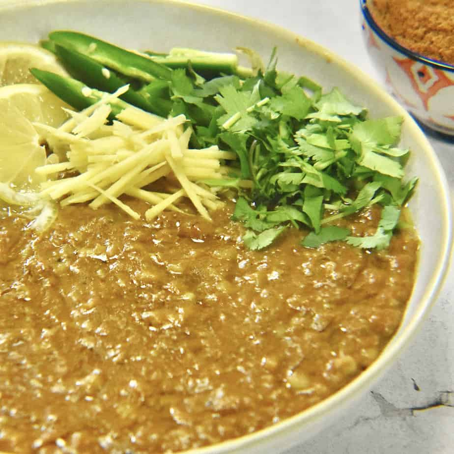

Haleem

Description
Haleem is one of my favorite dishes. It takes a lot of time and effort to make but if you follow this recipe and make it, I hope you will find it worth the effort!
Ingredients
- Haleem Mix
- 1 lb beef
- 1 cup red lentils
- 1/3 cup cooking oil
- 2 tablespoon garlic paste
- 10 cups of water
- 1/2 onion
- 1 green chili
- 1/2 inch piece ginger
- 1 lemon
- 1/2 cup cilantro
Steps
- Heat the cooking oil
- Saute the garlic paste for 2 minutes
- Add the beef and saute till light brown
- Rinse and drain the lentils and add them to the meat along with the Haleem Mix and 10 cups of water and bring to a boil
- Lower the heat to medium and slow cook for 2 hours till the meat is tender
- Remove the meat along with the lentils and grind in a food processor
- Add back to the pot and cook for 2 hours
- Finely chop the cilantro and green chilies
- Thinly slice the giner
- Quarter the lemon